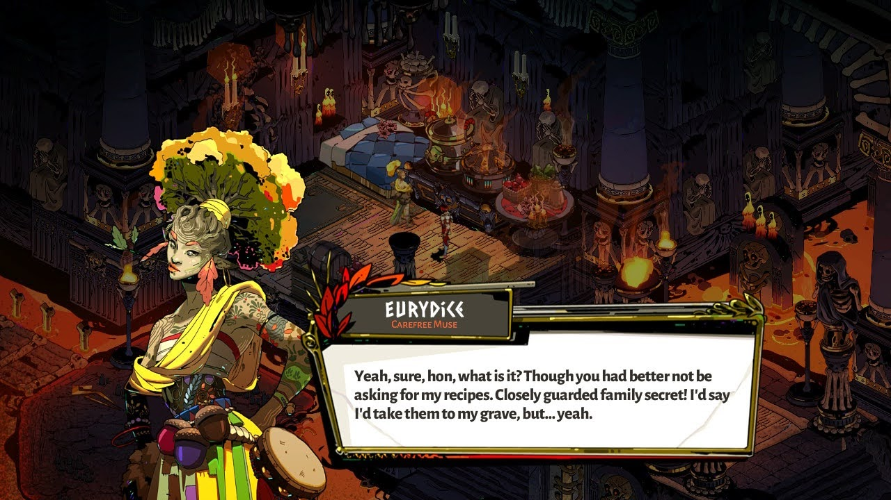
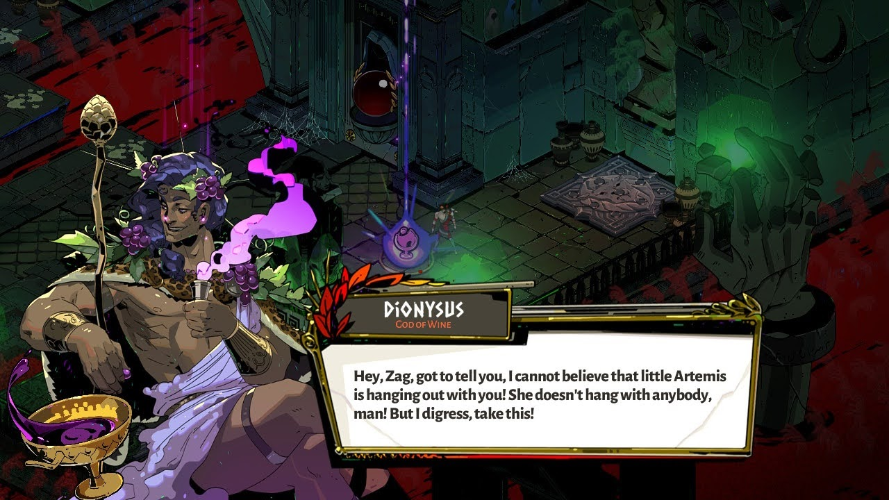
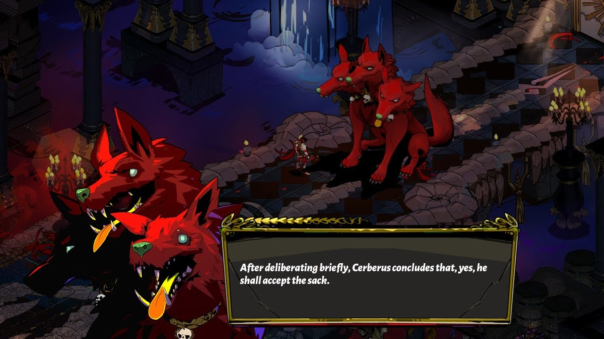
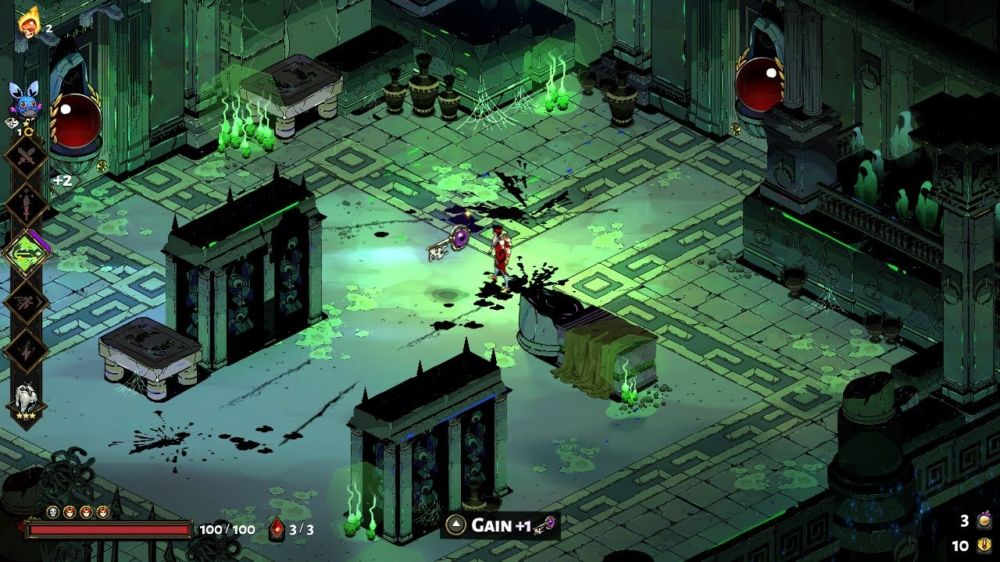

<!DOCTYPE html>
<html lang="en-US">
<head>
<!--
NEEDS IMAGES
-->
<meta charset="UTF-8">
<meta name="description" content="Review Website">
<meta name="keywords" content="HTML, CSS, JavaScript">
<meta name="author" content="Calvin Bunker">
<title> Hades - Fellowship </title>
<style>
ul {
position: fixed;
top: 0;
left: 0;
width: 100%;
list-style-type: none;
margin: 0;
padding: 0;
overflow: hidden;
background-color: #333;
}
.left {
float: left;
}
li {
float: right;
}
li a {
font-family: "Trebuchet MS", Sans-Serif;
display: block;
color: white;
padding: 14px 16px;
text-align: center;
text-decoration: none;
}
a p {
display: block;
color: white;
}
a p:hover {
background-color: #666633;
}
li a:hover:not(.active) {
background-color: #111;
}
.active {
background-color: #666633;
}
li {
display: inline-block;
}
div {
margin-left: 20%;
margin-right: 20%;
}
.div2 {
margin-right: 20%;
margin-left: 20%;
}
.div3 {
margin-right: 10%;
margin-left: 10%;
margin-bottom: 50px;
width: 60%;
}
h1 {
text-align: center;
font-family: "Trebuchet MS", Sans-Serif;
color:#666633;
}
h2 {
text-align: center;
font-family: "Trebuchet MS", Sans-Serif;
color:#666633;
}
h3 {
text-align: center;
font-family: "Trebuchet MS", Sans-Serif;
color:#333;
}
h5 {
text-align: center;
}
p {
font-family: "Trebuchet MS", Sans-Serif;
text-indent: 50px;
font-size: 20px;
line-height: 1.6;
text-decoration: none; !important
}
a {
text-decoration: none; !important
}
p.solid {
border-style: solid;
padding: 5px;
}
</style>
<link rel="icon" href="../images/favicon.ico" type="image/x-icon">
</head>
<body>
<ul>
<li class="left"> <a href="../index.html"><em> <b> The Fellowship </b> </em> </a> </li>
<li> <a href="../sourceCode.html"> Source Code </a> </li>
<li> <a href="../bookList.html"> Book Reviews </a> </li>
<li> <a href="../movieList.html"> Movie Reviews </a> </li>
<li> <a href="../gameList.html" class="active"> Game Reviews </a> </li>
<li> <a href="../index.html"> Home </a> </li>
</ul>
<div style="margin-top: 80px;">
<h1> Hades </h1>
<h5 > <em> Written by Calvin Bunker</em> </h5>
<h5 > <em> Played on Nintendo Switch Lite </em> </h5>
</div>
<hr width="90%">
<div>
<p> <i> Hades </i> is Supergiant Games’ newest (and arguably greatest) indie video game. It’s a roguelike dungeon crawler - this genre is highly packed with indie developers, and with other fantastic hits such as <i> Enter The Gungeon, Minecraft: Dungeons, </i> and <i> The Binding of Isaac, Hades </i> has some serious competition. </p> <br> <br>
<h2> Story </h2>
<p> <i> Hades </i> stars the son of Hades himself, Zagreus. Zagreus is a sarcastic teenager, who has put it upon himself to leave Tartarus (where he and Hades live and rule) in search of his mother, against his father’s wishes. Hades isn’t used to anyone disobeying him, so his son, who he can’t realistically prevent from escaping, trying to run away is infuriating. Hades sends his armies at Zagreus, slowing him down in his escape. And that’s where the game starts, Zagreus’ first escape attempt. </p>
<p> Along with Zagreus and Hades, there are several Greek gods that assist Zagreus in escaping. They each have ties to specific ideas, and all have distinct personalities. There are several other figures from Greek mythology too, such as Theseus and The Minotaur, Asterius. All of these characters either help Zagreus, or were sent by his father to stop him. All of them also have important story ties, and each time you encounter them, their dialogue is different, and Zagreus’ relationship with them changes. </p>
<p> You are also given the option to give gifts to most of the characters, in the form of items you find while playing. These gifts further your relationship with them, which reveals more of their ambitions and depth, and eventually leading to useful items you can equip. </p>
<p> The game’s storyline is truly awesome for a game that focuses so heavily on gameplay, and is a major highlight. The characters have great motivations, and the interactions with not only the characters on Zagreus’ side, but also with those who oppose him are all wonderful, and every character has so much personality.</p>
<h3> I give <i> Hades </i> an 8/10 for story. </h3>
<br> <br>

<h2> Gameplay </h2>
<p> <i> Hades </i> has that classic roguelike gameplay loop, where you move through a randomly generated dungeon, going back to the start repeatedly until you eventually make it through to the end. Hades does this in the form of Zagreus escaping again and again, and fighting through until eventually he escapes. It also adds three very important twists: story, upgrades, and boons. </p>
<p> First up: story. The game integrates the story and the dialogue into the gameplay at every turn. Every time you die, you return to a main “lobby” area of Hades’ home, where there are several characters that will have new things to say to you. There are even certain moments when you reset where you’ll have a sort of small story-based mission to complete. The main bosses of the game have personal ties to you as well, and each time you face them they’ll change somewhat, and they’ll also have a brief conversation with Zagreus. </p>
<p> Second: upgrades. The game has this “Mirror of Darkness” in Zagreus’ room, which was gifted to him by Nyx, his pseudo-stepmother, as she's one of the few people who encourages and helps him in escaping. The Mirror of Darkness lets you spend darkness, a currency you gather through the game, on upgrades, such as a second life, or more health. There are also weapons you can purchase, named “Infernal Arms,” which you can unlock with special, rare keys. Each weapon (there are six of them) has a very unique set of attacks, which drastically change the way you play the game, and they can also be upgraded using other rare items. </p>
<p> Third, and most important: boons. The Greek Gods have an integral part of the gameplay loop, as each of them will frequently contact Zagreus through his escape attempts and give him “boons” to aid his escape. These boons are all themed to the specific god. One example is Artemis, the goddess of the hunt, gives Zagreus bow and arrow or trap themed boons. The boons will either give you new passive effects, or they’ll upgrade your normal abilities. Each god’s set of boons also will work better together, so having multiple boons from the same god can be very powerful. Learning how to use and how to pick boons effectively is essential to beating the game. </p>

<p> The game has a few distinct areas, and you have to go through all of them to beat the game. The first is Tartarus, the lowest level of the Greek underworld, where the worst of the worst are sent. The second is Asphodel, a hell-inspired area, where falling into the lava is a constant threat, and is meant for people of equal parts good and bad. The third is Elysium, a paradise for heroes and such. The final area is the Temple of Styx, the only known gate from the overworld to the Greek underworld. </p>
<p> The areas consist of many different levels, each randomly placed together each time you reset. Once you clear all of the enemies in any given area, a reward appears, and a few doorways open up, which show the reward of the next area, letting you choose what you want. The areas all have some secret areas that boost Zagreus, or shops where you can spend gold. At the end of each area, there is a wholly unique boss Zagreus must face. </p>
<p> All-in-all, <i> Hades </i> makes some truly wonderful changes to an already amazing gameplay style. It’s extremely satisfying to destroy and mow through the dozens of enemies in each level, and it does a fantastic job at making you feel like an actual god. </p>
<h3 > I give it an 8.5/10 for gameplay. </h3>
<br> <br>

<h2 > Visuals </h2>
<p> This game has this beautiful, Greek inspired artstyle, and is fully packed with some of the most visually appealing art direction in any 2D video game ever. It trades blows with legendary titles like The Legend of Zelda. The game has dozens of characters, each with their own highly distinct style, and the artists took full advantage of the attitude of the Greek Gods. Each god has their own color scheme, which is intertwined not only into their character design, but also the “boons” they bestow to the player. </p>
<p> <i> Hades’ </i> visual style is a key part of the massive hook of the game. It’s actually probably my favorite thing about the game, and it’s paired incredibly with the voice lines every single character has. If you like any of the visual styles of Greek mythology, you’ll love this. </p>
<h3 > I give Hades a 9/10 for visuals. </h3>
<br> <br>

<h2 > Conclusion </h2>
<p> Supergiant Games has done it again. This is their fourth game, alongside <i> Bastion, Transistor, </i> and <i> Pyre, Hades </i> fits right in as another phenomenal title, and it’s several Game of The Year awards for 2020 show it. If you like roguelikes, or if you’re a Greek mythology buff, or even if you just wanna feel like a god, this game is for you. This is one of the best games I have ever experienced. </p>
<h2 > <i> Hades </i> gets an overall score of 25.5/30 </h2>
</div>
<br>
<hr width="90%">
<br> <br>
</body>
</html>